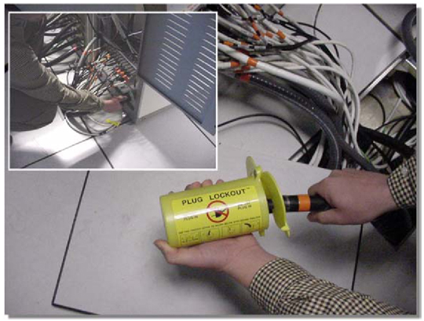

Operating Documentation
Direction 5133330-3, Rev# 14
Signa EXCITE HD 3.0T Service Methods
Module Version 1.0, Version Date 5/3/07
Operating Documentation |
The following safety procedures must be performed BEFORE servicing any of the System Cabinet’s FRU’s.
When removing the ENTIRE MGD Chassis, RRF Chassis, or Driver Module, a Plug Lockout (See Illustration 1) must be attached to the power plug outlet to prevent the accidental application of power to the specified chassis or module.
Illustration 1: PLUG LOCKOUT

When removing the Network Switch, or FRU components of the MGD Chassis, RRF Chassis or Driver Module, removal or replacement may be performed after visually checking to ensure that the chassis or module’s power switch is in the OFF position.